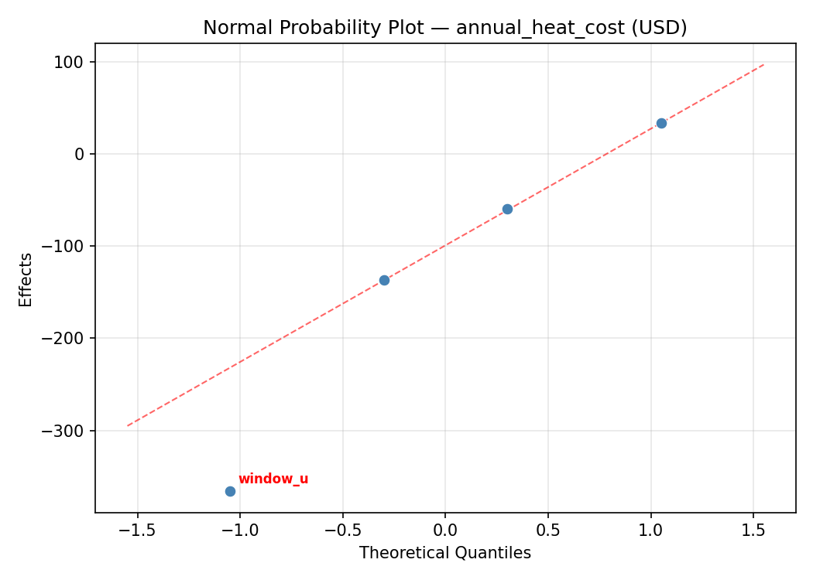
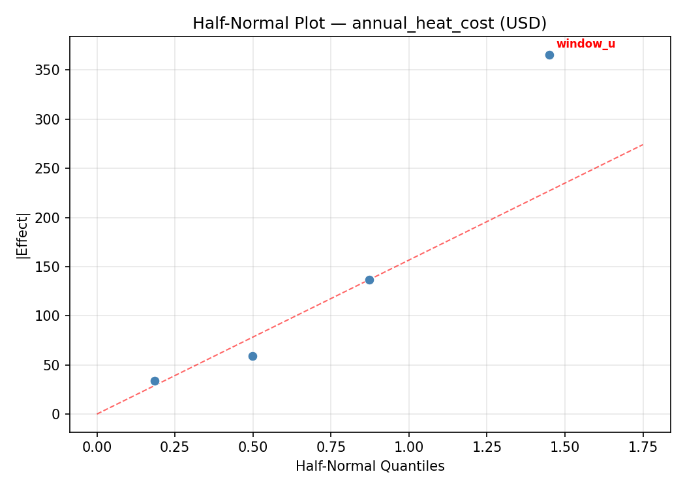
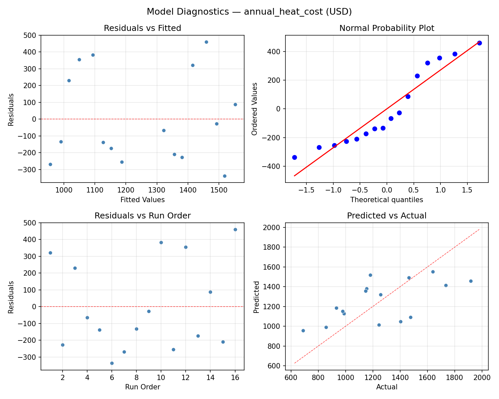
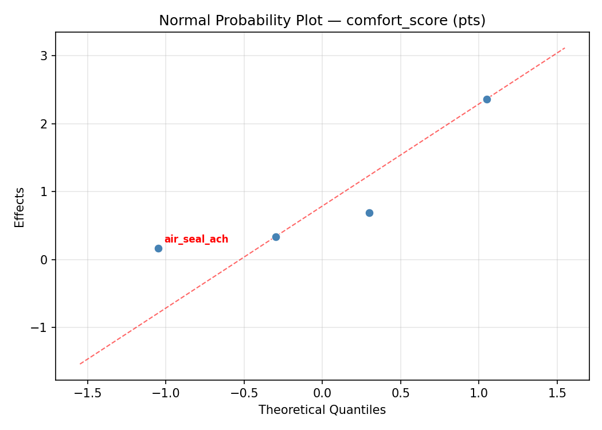
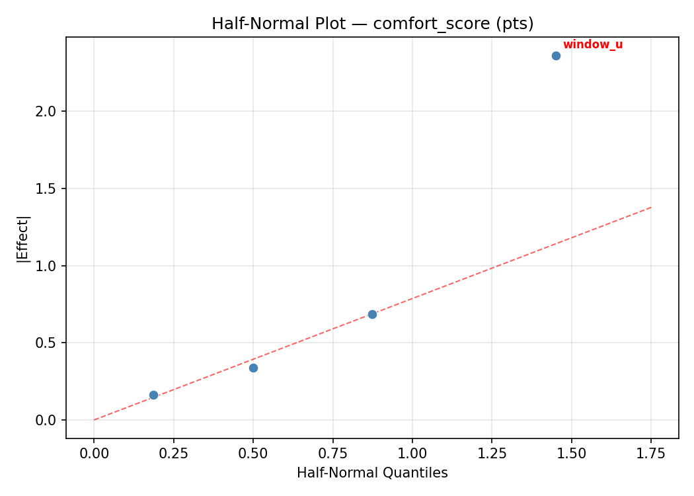
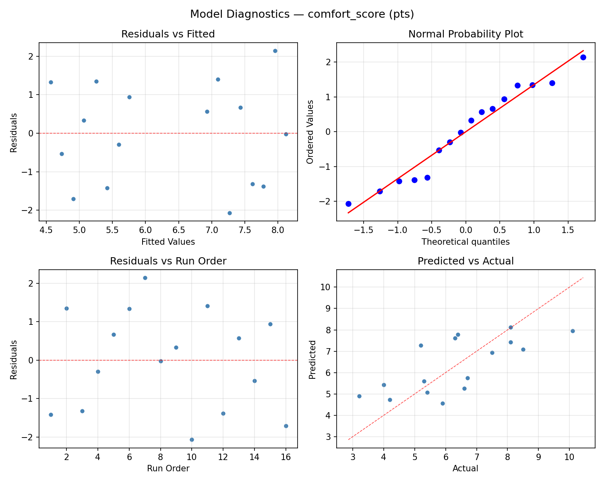

Summary
This experiment investigates home insulation optimization. Full factorial of attic R-value, wall R-value, window U-factor, and air sealing effort to minimize heating cost and maximize comfort.
The design varies 4 factors: attic r (R-value), ranging from 19 to 49, wall r (R-value), ranging from 11 to 21, window u (U-factor), ranging from 0.25 to 0.65, and air seal ach (ACH50), ranging from 2 to 8. The goal is to optimize 2 responses: annual heat cost (USD) (minimize) and comfort score (pts) (maximize). Fixed conditions held constant across all runs include climate zone = 5A, house sqft = 2000.
A full factorial design was used to explore all 16 possible combinations of the 4 factors at two levels. This guarantees that every main effect and interaction can be estimated independently, at the cost of a larger experiment (16 runs).
Quadratic response surface models were fitted to capture potential curvature and factor interactions. The RSM contour plots below visualize how pairs of factors jointly affect each response.
Key Findings
For annual heat cost, the most influential factors were attic r (53.8%), wall r (23.3%), air seal ach (17.0%). The best observed value was 687.0 (at attic r = 19, wall r = 11, window u = 0.65).
For comfort score, the most influential factors were attic r (45.1%), air seal ach (22.8%), wall r (20.5%). The best observed value was 10.1 (at attic r = 19, wall r = 11, window u = 0.65).
Recommended Next Steps
- Consider whether any fixed factors should be varied in a future study.
Experimental Setup
Factors
| Factor | Low | High | Unit |
|---|
attic_r | 19 | 49 | R-value |
wall_r | 11 | 21 | R-value |
window_u | 0.25 | 0.65 | U-factor |
air_seal_ach | 2 | 8 | ACH50 |
Fixed: climate_zone = 5A, house_sqft = 2000
Responses
| Response | Direction | Unit |
|---|
annual_heat_cost | ↓ minimize | USD |
comfort_score | ↑ maximize | pts |
Configuration
{
"metadata": {
"name": "Home Insulation Optimization",
"description": "Full factorial of attic R-value, wall R-value, window U-factor, and air sealing effort to minimize heating cost and maximize comfort"
},
"factors": [
{
"name": "attic_r",
"levels": [
"19",
"49"
],
"type": "continuous",
"unit": "R-value"
},
{
"name": "wall_r",
"levels": [
"11",
"21"
],
"type": "continuous",
"unit": "R-value"
},
{
"name": "window_u",
"levels": [
"0.25",
"0.65"
],
"type": "continuous",
"unit": "U-factor"
},
{
"name": "air_seal_ach",
"levels": [
"2",
"8"
],
"type": "continuous",
"unit": "ACH50"
}
],
"fixed_factors": {
"climate_zone": "5A",
"house_sqft": "2000"
},
"responses": [
{
"name": "annual_heat_cost",
"optimize": "minimize",
"unit": "USD"
},
{
"name": "comfort_score",
"optimize": "maximize",
"unit": "pts"
}
],
"settings": {
"operation": "full_factorial",
"test_script": "use_cases/129_home_insulation/sim.sh"
}
}
Experimental Matrix
The Full Factorial Design produces 16 runs. Each row is one experiment with specific factor settings.
| Run | attic_r | wall_r | window_u | air_seal_ach |
|---|
| 1 | 19 | 21 | 0.65 | 8 |
| 2 | 49 | 11 | 0.25 | 8 |
| 3 | 19 | 21 | 0.25 | 8 |
| 4 | 19 | 21 | 0.65 | 2 |
| 5 | 49 | 21 | 0.65 | 2 |
| 6 | 49 | 11 | 0.65 | 2 |
| 7 | 49 | 21 | 0.25 | 2 |
| 8 | 49 | 11 | 0.25 | 2 |
| 9 | 19 | 11 | 0.25 | 8 |
| 10 | 19 | 11 | 0.65 | 2 |
| 11 | 49 | 21 | 0.25 | 8 |
| 12 | 49 | 21 | 0.65 | 8 |
| 13 | 19 | 21 | 0.25 | 2 |
| 14 | 49 | 11 | 0.65 | 8 |
| 15 | 19 | 11 | 0.25 | 2 |
| 16 | 19 | 11 | 0.65 | 8 |
Step-by-Step Workflow
1
Preview the design
$ python doe.py info --config use_cases/129_home_insulation/config.json
2
Generate the runner script
$ python doe.py generate --config use_cases/129_home_insulation/config.json \
--output use_cases/129_home_insulation/results/run.sh --seed 42
3
Execute the experiments
$ bash use_cases/129_home_insulation/results/run.sh
4
Analyze results
$ python doe.py analyze --config use_cases/129_home_insulation/config.json
5
Get optimization recommendations
$ python doe.py optimize --config use_cases/129_home_insulation/config.json
6
Multi-objective optimization
With 2 competing responses, use --multi to find the best compromise via Derringer–Suich desirability.
$ python doe.py optimize --config use_cases/129_home_insulation/config.json --multi
7
Generate the HTML report
$ python doe.py report --config use_cases/129_home_insulation/config.json \
--output use_cases/129_home_insulation/results/report.html
Features Exercised
| Feature | Value |
|---|
| Design type | full_factorial |
| Factor types | continuous (all 4) |
| Arg style | double-dash |
| Responses | 2 (annual_heat_cost ↓, comfort_score ↑) |
| Total runs | 16 |
Analysis Results
Generated from actual experiment runs using the DOE Helper Tool.
Response: annual_heat_cost
Top factors: attic_r (53.8%), wall_r (23.3%), air_seal_ach (17.0%).
ANOVA
| Source | DF | SS | MS | F | p-value |
|---|
| Source | DF | SS | MS | F | p-value |
| attic_r | 1 | 441892.5625 | 441892.5625 | 3.463 | 0.1218 |
| wall_r | 1 | 82512.5625 | 82512.5625 | 0.647 | 0.4578 |
| window_u | 1 | 5365.5625 | 5365.5625 | 0.042 | 0.8456 |
| air_seal_ach | 1 | 43995.0625 | 43995.0625 | 0.345 | 0.5826 |
| attic_r*wall_r | 1 | 112728.0625 | 112728.0625 | 0.883 | 0.3904 |
| attic_r*window_u | 1 | 90450.5625 | 90450.5625 | 0.709 | 0.4382 |
| attic_r*air_seal_ach | 1 | 150738.0625 | 150738.0625 | 1.181 | 0.3267 |
| wall_r*window_u | 1 | 79101.5625 | 79101.5625 | 0.620 | 0.4667 |
| wall_r*air_seal_ach | 1 | 32130.5625 | 32130.5625 | 0.252 | 0.6371 |
| window_u*air_seal_ach | 1 | 17889.0625 | 17889.0625 | 0.140 | 0.7234 |
| Error | 5 | 637985.3125 | 127597.0625 | | |
| Total | 15 | 1694788.9375 | 112985.9292 | | |
Pareto Chart

Main Effects Plot

Normal Probability Plot of Effects

Half-Normal Plot of Effects

Model Diagnostics

Response: comfort_score
Top factors: attic_r (45.1%), air_seal_ach (22.8%), wall_r (20.5%).
ANOVA
| Source | DF | SS | MS | F | p-value |
|---|
| Source | DF | SS | MS | F | p-value |
| attic_r | 1 | 9.1506 | 9.1506 | 1.750 | 0.2431 |
| wall_r | 1 | 1.8906 | 1.8906 | 0.362 | 0.5738 |
| window_u | 1 | 0.6006 | 0.6006 | 0.115 | 0.7484 |
| air_seal_ach | 1 | 2.3256 | 2.3256 | 0.445 | 0.5344 |
| attic_r*wall_r | 1 | 1.1556 | 1.1556 | 0.221 | 0.6581 |
| attic_r*window_u | 1 | 2.1756 | 2.1756 | 0.416 | 0.5473 |
| attic_r*air_seal_ach | 1 | 3.7056 | 3.7056 | 0.709 | 0.4383 |
| wall_r*window_u | 1 | 1.2656 | 1.2656 | 0.242 | 0.6436 |
| wall_r*air_seal_ach | 1 | 1.0506 | 1.0506 | 0.201 | 0.6727 |
| window_u*air_seal_ach | 1 | 0.4556 | 0.4556 | 0.087 | 0.7797 |
| Error | 5 | 26.1431 | 5.2286 | | |
| Total | 15 | 49.9194 | 3.3280 | | |
Pareto Chart

Main Effects Plot

Normal Probability Plot of Effects

Half-Normal Plot of Effects

Model Diagnostics

Response Surface Plots
3D surfaces fitted with quadratic RSM. Red dots are observed data points.
annual heat cost attic r vs air seal ach

annual heat cost attic r vs wall r

annual heat cost attic r vs window u

annual heat cost wall r vs air seal ach

annual heat cost wall r vs window u

annual heat cost window u vs air seal ach

comfort score attic r vs air seal ach

comfort score attic r vs wall r

comfort score attic r vs window u

comfort score wall r vs air seal ach

comfort score wall r vs window u

comfort score window u vs air seal ach

Multi-Objective Optimization
When responses compete, Derringer–Suich desirability finds the best compromise.
Each response is scaled to a 0–1 desirability, then combined via a weighted geometric mean.
Overall Desirability
D = 0.9545
Per-Response Desirability
| Response | Weight | Desirability | Predicted | Dir |
|---|
annual_heat_cost |
1.0 |
|
687.00 0.9545 687.00 USD |
↓ |
comfort_score |
1.5 |
|
10.10 0.9545 10.10 pts |
↑ |
Recommended Settings
| Factor | Value |
|---|
attic_r | 49 R-value |
wall_r | 11 R-value |
window_u | 0.65 U-factor |
air_seal_ach | 8 ACH50 |
Source: from observed run #7
Trade-off Summary
Sacrifice = how much worse than single-objective best.
| Response | Predicted | Best Observed | Sacrifice |
|---|
comfort_score | 10.10 | 10.10 | +0.00 |
Top 3 Runs by Desirability
| Run | D | Factor Settings |
|---|
| #11 | 0.7556 | attic_r=19, wall_r=11, window_u=0.65, air_seal_ach=8 |
| #8 | 0.7433 | attic_r=49, wall_r=21, window_u=0.25, air_seal_ach=8 |
Model Quality
| Response | R² | Type |
|---|
comfort_score | 0.2413 | linear |
Full Multi-Objective Output
============================================================
MULTI-OBJECTIVE OPTIMIZATION
Method: Derringer-Suich Desirability Function
============================================================
Overall desirability: D = 0.9545
Response Weight Desirability Predicted Direction
---------------------------------------------------------------------
annual_heat_cost 1.0 0.9545 687.00 USD ↓
comfort_score 1.5 0.9545 10.10 pts ↑
Recommended settings:
attic_r = 49 R-value
wall_r = 11 R-value
window_u = 0.65 U-factor
air_seal_ach = 8 ACH50
(from observed run #7)
Trade-off summary:
annual_heat_cost: 687.00 (best observed: 687.00, sacrifice: +0.00)
comfort_score: 10.10 (best observed: 10.10, sacrifice: +0.00)
Model quality:
annual_heat_cost: R² = 0.2709 (linear)
comfort_score: R² = 0.2413 (linear)
Top 3 observed runs by overall desirability:
1. Run #7 (D=0.9545): attic_r=49, wall_r=11, window_u=0.65, air_seal_ach=8
2. Run #11 (D=0.7556): attic_r=19, wall_r=11, window_u=0.65, air_seal_ach=8
3. Run #8 (D=0.7433): attic_r=49, wall_r=21, window_u=0.25, air_seal_ach=8
Full Analysis Output
=== Main Effects: annual_heat_cost ===
Factor Effect Std Error % Contribution
--------------------------------------------------------------
attic_r -332.3750 84.0334 53.8%
wall_r -143.6250 84.0334 23.3%
air_seal_ach -104.8750 84.0334 17.0%
window_u -36.6250 84.0334 5.9%
=== ANOVA Table: annual_heat_cost ===
Source DF SS MS F p-value
-----------------------------------------------------------------------------
attic_r 1 441892.5625 441892.5625 3.463 0.1218
wall_r 1 82512.5625 82512.5625 0.647 0.4578
window_u 1 5365.5625 5365.5625 0.042 0.8456
air_seal_ach 1 43995.0625 43995.0625 0.345 0.5826
attic_r*wall_r 1 112728.0625 112728.0625 0.883 0.3904
attic_r*window_u 1 90450.5625 90450.5625 0.709 0.4382
attic_r*air_seal_ach 1 150738.0625 150738.0625 1.181 0.3267
wall_r*window_u 1 79101.5625 79101.5625 0.620 0.4667
wall_r*air_seal_ach 1 32130.5625 32130.5625 0.252 0.6371
window_u*air_seal_ach 1 17889.0625 17889.0625 0.140 0.7234
Error 5 637985.3125 127597.0625
Total 15 1694788.9375 112985.9292
=== Interaction Effects: annual_heat_cost ===
Factor A Factor B Interaction % Contribution
------------------------------------------------------------------------
attic_r air_seal_ach 194.1250 24.0%
attic_r wall_r 167.8750 20.7%
attic_r window_u 150.3750 18.6%
wall_r window_u 140.6250 17.4%
wall_r air_seal_ach -89.6250 11.1%
window_u air_seal_ach 66.8750 8.3%
=== Summary Statistics: annual_heat_cost ===
attic_r:
Level N Mean Std Min Max
------------------------------------------------------------
19 8 1420.2500 377.0221 687.0000 1919.0000
49 8 1087.8750 191.9363 857.0000 1465.0000
wall_r:
Level N Mean Std Min Max
------------------------------------------------------------
11 8 1325.8750 341.6307 979.0000 1919.0000
21 8 1182.2500 337.0662 687.0000 1639.0000
window_u:
Level N Mean Std Min Max
------------------------------------------------------------
0.25 8 1272.3750 335.5026 857.0000 1919.0000
0.65 8 1235.7500 358.8652 687.0000 1736.0000
air_seal_ach:
Level N Mean Std Min Max
------------------------------------------------------------
2 8 1306.5000 351.0376 857.0000 1919.0000
8 8 1201.6250 335.5596 687.0000 1736.0000
=== Main Effects: comfort_score ===
Factor Effect Std Error % Contribution
--------------------------------------------------------------
attic_r 1.5125 0.4561 45.1%
air_seal_ach 0.7625 0.4561 22.8%
wall_r 0.6875 0.4561 20.5%
window_u 0.3875 0.4561 11.6%
=== ANOVA Table: comfort_score ===
Source DF SS MS F p-value
-----------------------------------------------------------------------------
attic_r 1 9.1506 9.1506 1.750 0.2431
wall_r 1 1.8906 1.8906 0.362 0.5738
window_u 1 0.6006 0.6006 0.115 0.7484
air_seal_ach 1 2.3256 2.3256 0.445 0.5344
attic_r*wall_r 1 1.1556 1.1556 0.221 0.6581
attic_r*window_u 1 2.1756 2.1756 0.416 0.5473
attic_r*air_seal_ach 1 3.7056 3.7056 0.709 0.4383
wall_r*window_u 1 1.2656 1.2656 0.242 0.6436
wall_r*air_seal_ach 1 1.0506 1.0506 0.201 0.6727
window_u*air_seal_ach 1 0.4556 0.4556 0.087 0.7797
Error 5 26.1431 5.2286
Total 15 49.9194 3.3280
=== Interaction Effects: comfort_score ===
Factor A Factor B Interaction % Contribution
------------------------------------------------------------------------
attic_r air_seal_ach -0.9625 26.4%
attic_r window_u -0.7375 20.2%
wall_r window_u -0.5625 15.4%
attic_r wall_r -0.5375 14.7%
wall_r air_seal_ach 0.5125 14.0%
window_u air_seal_ach -0.3375 9.2%
=== Summary Statistics: comfort_score ===
attic_r:
Level N Mean Std Min Max
------------------------------------------------------------
19 8 5.5875 2.1350 3.2000 10.1000
49 8 7.1000 1.1250 5.4000 8.5000
wall_r:
Level N Mean Std Min Max
------------------------------------------------------------
11 8 6.0000 1.6527 3.2000 8.1000
21 8 6.6875 2.0322 4.2000 10.1000
window_u:
Level N Mean Std Min Max
------------------------------------------------------------
0.25 8 6.1500 1.6895 3.2000 8.5000
0.65 8 6.5375 2.0473 4.0000 10.1000
air_seal_ach:
Level N Mean Std Min Max
------------------------------------------------------------
2 8 5.9625 1.7369 3.2000 8.1000
8 8 6.7250 1.9448 4.0000 10.1000
Optimization Recommendations
=== Optimization: annual_heat_cost ===
Direction: minimize
Best observed run: #7
attic_r = 19
wall_r = 11
window_u = 0.65
air_seal_ach = 8
Value: 687.0
RSM Model (linear, R² = 0.0386, Adj R² = -0.3110):
Coefficients:
intercept +1254.0625
attic_r +6.8125
wall_r +8.6875
window_u -2.4375
air_seal_ach -62.9375
RSM Model (quadratic, R² = 0.3189, Adj R² = -9.2172):
Coefficients:
intercept +250.8125
attic_r +6.8125
wall_r +8.6875
window_u -2.4375
air_seal_ach -62.9375
attic_r*wall_r -95.0625
attic_r*window_u -104.9375
attic_r*air_seal_ach -8.1875
wall_r*window_u +47.1875
wall_r*air_seal_ach +85.6875
window_u*air_seal_ach -0.6875
attic_r^2 +250.8125
wall_r^2 +250.8125
window_u^2 +250.8125
air_seal_ach^2 +250.8125
Curvature analysis:
attic_r coef=+250.8125 convex (has a minimum)
wall_r coef=+250.8125 convex (has a minimum)
window_u coef=+250.8125 convex (has a minimum)
air_seal_ach coef=+250.8125 convex (has a minimum)
Notable interactions:
attic_r*window_u coef=-104.9375 (antagonistic)
attic_r*wall_r coef=-95.0625 (antagonistic)
wall_r*air_seal_ach coef=+85.6875 (synergistic)
wall_r*window_u coef=+47.1875 (synergistic)
attic_r*air_seal_ach coef=-8.1875 (antagonistic)
window_u*air_seal_ach coef=-0.6875 (antagonistic)
Predicted optimum (from linear model, at observed points):
attic_r = 49
wall_r = 21
window_u = 0.25
air_seal_ach = 2
Predicted value: 1334.9375
Surface optimum (via L-BFGS-B, linear model):
attic_r = 19
wall_r = 11
window_u = 0.65
air_seal_ach = 8
Predicted value: 1173.1875
Model quality: Weak fit — consider adding center points or using a different design.
Factor importance:
1. air_seal_ach (effect: -125.9, contribution: 77.8%)
2. wall_r (effect: 17.4, contribution: 10.7%)
3. attic_r (effect: 13.6, contribution: 8.4%)
4. window_u (effect: -4.9, contribution: 3.0%)
=== Optimization: comfort_score ===
Direction: maximize
Best observed run: #7
attic_r = 19
wall_r = 11
window_u = 0.65
air_seal_ach = 8
Value: 10.1
RSM Model (linear, R² = 0.0498, Adj R² = -0.2957):
Coefficients:
intercept +6.3438
attic_r -0.1312
wall_r -0.2688
window_u -0.0813
air_seal_ach +0.2437
RSM Model (quadratic, R² = 0.3086, Adj R² = -9.3707):
Coefficients:
intercept +1.2688
attic_r -0.1312
wall_r -0.2687
window_u -0.0813
air_seal_ach +0.2438
attic_r*wall_r +0.4813
attic_r*window_u +0.3688
attic_r*air_seal_ach -0.0813
wall_r*window_u -0.4938
wall_r*air_seal_ach -0.4188
window_u*air_seal_ach +0.1187
attic_r^2 +1.2688
wall_r^2 +1.2688
window_u^2 +1.2688
air_seal_ach^2 +1.2688
Curvature analysis:
window_u coef=+1.2688 convex (has a minimum)
attic_r coef=+1.2688 convex (has a minimum)
wall_r coef=+1.2688 convex (has a minimum)
air_seal_ach coef=+1.2688 convex (has a minimum)
Notable interactions:
wall_r*window_u coef=-0.4938 (antagonistic)
attic_r*wall_r coef=+0.4813 (synergistic)
wall_r*air_seal_ach coef=-0.4188 (antagonistic)
attic_r*window_u coef=+0.3688 (synergistic)
Predicted optimum (from linear model, at observed points):
attic_r = 19
wall_r = 11
window_u = 0.25
air_seal_ach = 8
Predicted value: 7.0688
Surface optimum (via L-BFGS-B, linear model):
attic_r = 19
wall_r = 11
window_u = 0.25
air_seal_ach = 8
Predicted value: 7.0688
Model quality: Weak fit — consider adding center points or using a different design.
Factor importance:
1. wall_r (effect: -0.5, contribution: 37.1%)
2. air_seal_ach (effect: 0.5, contribution: 33.6%)
3. attic_r (effect: -0.3, contribution: 18.1%)
4. window_u (effect: -0.2, contribution: 11.2%)